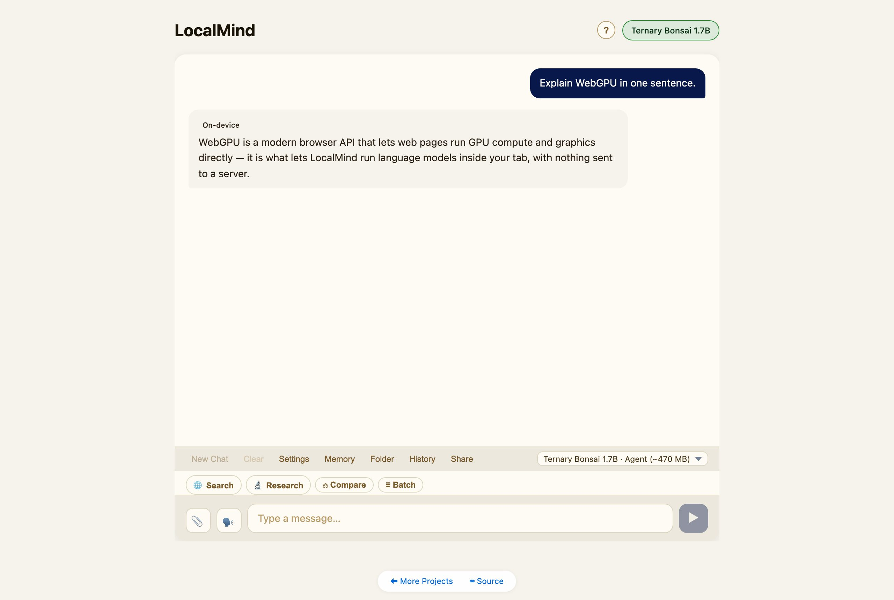
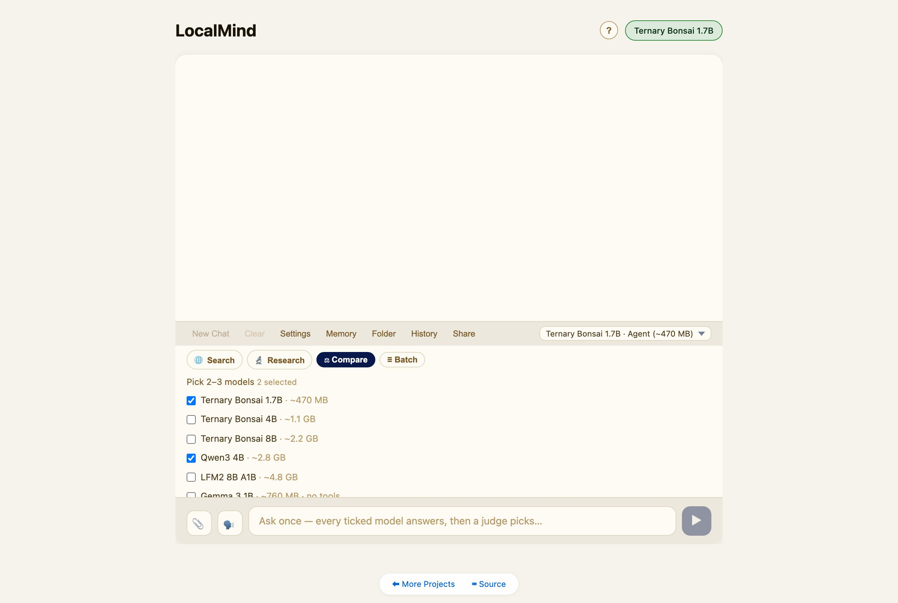
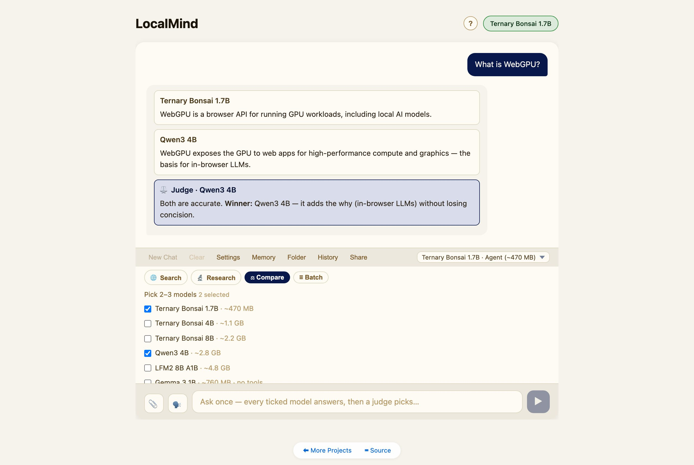
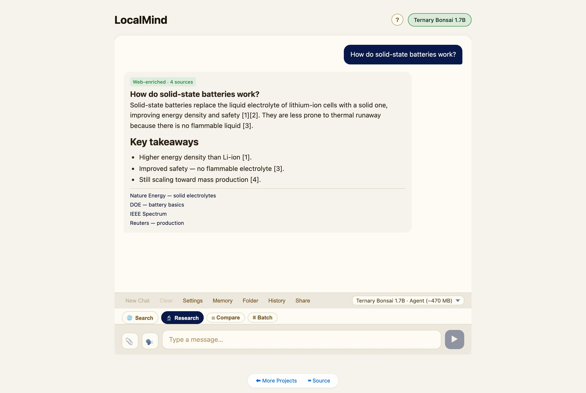
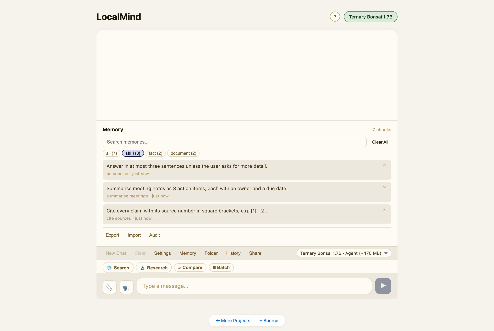
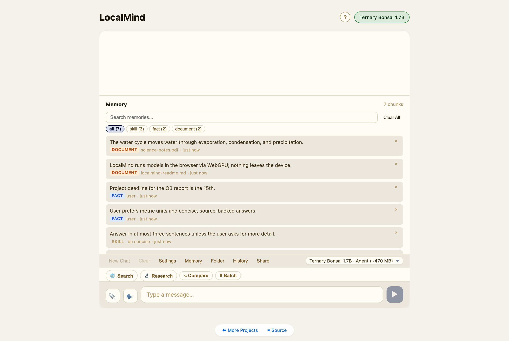
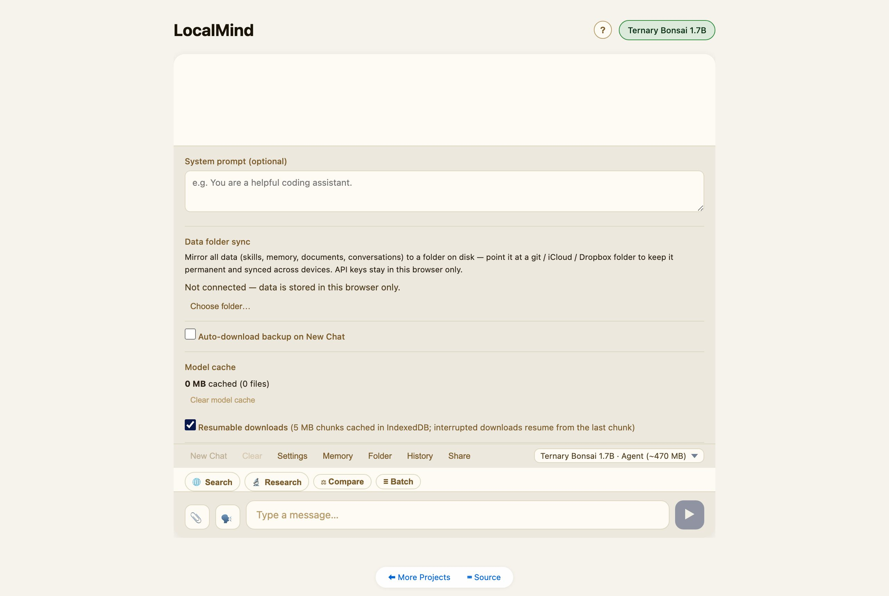

A private AI workspace that runs entirely inside your browser tab.
No server · no API keys required · nothing leaves your deviceOpen LocalMind and pick a model from the dropdown — it downloads once (over WebGPU), is cached locally, and from then on runs offline. Type a message and hit Enter. Everything — the model, your chats, your memory — stays on your device.

Eight models span three trade-offs — download size, quality, and capability:
Above the message box is a row of mode chips. They all use the same input and Send button:

Tap ⚖ Compare, tick 2–3 models, type one question, and Send. LocalMind loads each model in turn (one at a time — WebGPU can’t hold several at once), collects every answer, then the last model loaded acts as judge and picks the best.

Tap 🔬 Research and ask a question. LocalMind drafts several sub-queries, searches the web, reads the top sources, and writes a cited report with a sources list. It needs a web-search provider (set one in Settings); tapping the chip will offer to open Settings if you haven’t.

Tap ≣ Batch and put one prompt per line (use Shift+Enter for new lines). Send runs them in sequence. Turn on Auto-inject {{previous}} to chain each answer into the next prompt.
The agent can save reusable skills — named recipes like “cite sources” or “be concise.” Once saved, a relevant skill is retrieved and applied automatically in later chats, so the assistant gets better the more you use it. Skills live in the Memory panel under the skill filter.

LocalMind keeps a private, on-device memory (a local vector store). The agent can store facts; you can attach documents (PDF / DOCX / TXT) via the 📎 button or ingest a whole Folder, and they become searchable context. Open Memory to browse, filter, search, or clear it.

By default all data lives in this browser. In Settings → Data folder sync, connect a folder and LocalMind mirrors everything — skills, memory, documents, conversations — to it as plain files. Point that folder at a git / iCloud / Dropbox directory and your data follows you across devices. API keys stay in the browser and are never written to the folder.

Models run on your device via WebGPU. Your conversations, memory, and documents never leave your machine. The only thing that touches the network is a web search — and only when you choose Search or Research, using a provider you configure. LocalMind can also be installed as an app (look for your browser’s install button) and works offline once a model is cached.